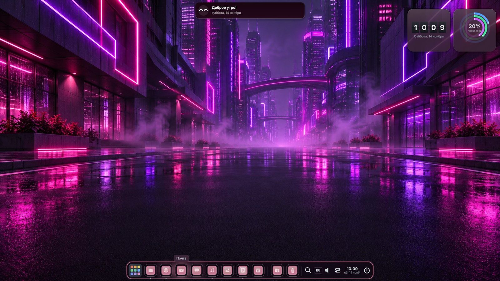
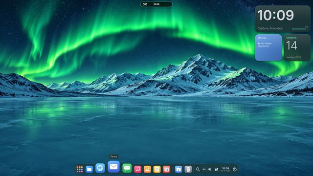
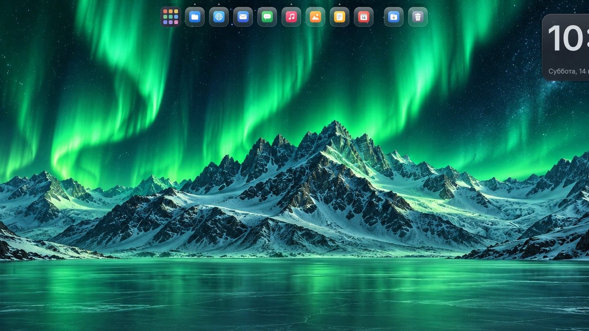
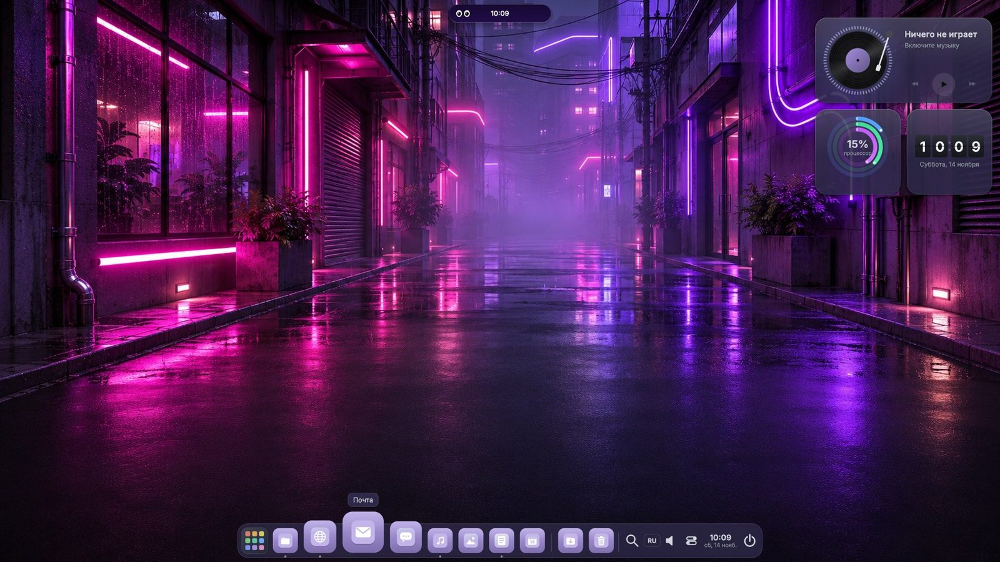
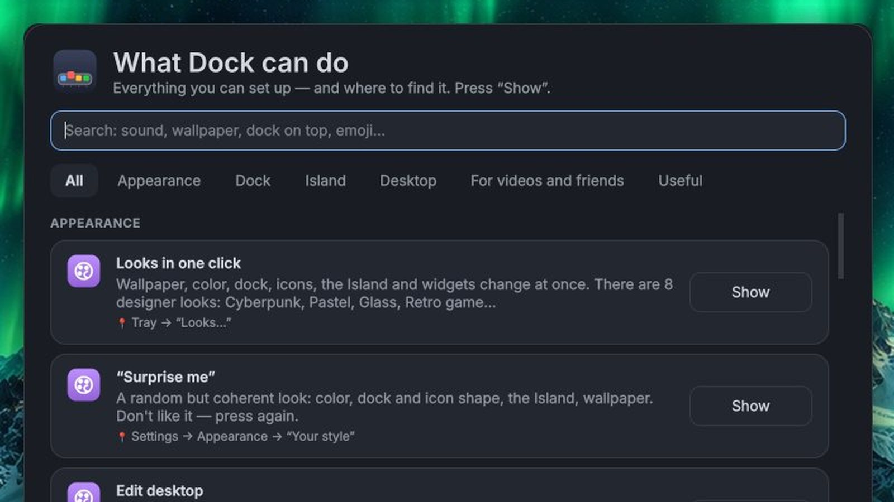

Haz Windows tuyo
Dock convierte un escritorio normal en uno bonito y práctico: un dock en cualquier borde de la pantalla, una Isla viva arriba, fondos animados, widgets y estilos listos, todo con un clic.
⬇ Descargar gratis


Estilos de diseñador
Fondo, color, forma del dock, iconos, la Isla y los widgets cambian a la vez. ¿No te convence? «Sorpréndeme» crea un estilo al azar.




Donde quieras, como quieras

Dock en cualquier borde
Abajo, arriba, a la izquierda o a la derecha: mantén Alt y arrastra. ¿Necesitas más? Activa un segundo dock para juegos o trabajo.

Editar escritorio
Mueve widgets, el dock y la Isla con el ratón, añade pegatinas, GIF y textos con cualquier fuente.

La Isla arriba
Una píldora viva: música con portada y letra, notificaciones, recordatorios, temporizador y archivos del móvil por Wi-Fi.

34 widgets
Reloj, tiempo, vinilo, calendario, calculadora, luna, hora mundial. Cualquier tamaño, cristal esmerilado, conjuntos listos.

Fondos animados
Vídeo, GIF y escenas vivas. El fondo sigue al ratón, brilla con la música y, si nieva fuera, también nieva en tu escritorio.

Nunca te pierdes
«Qué sabe hacer Dock» muestra cada función con un botón «Mostrar», y un consejo diario te sugiere algo nuevo.
Estilos de la comunidad
Escritorios creados por usuarios de Dock. Copia un código y pégalo en Dock: Estilos → «Pegar código…».
Preguntas frecuentes
¿Es gratis?
Sí. Todo lo que ves en esta página es gratis.
¿Es seguro?
Dock no te rastrea y no tiene anuncios. Cada actualización está firmada: Dock no instala un archivo si la firma no coincide.
¿Ralentizará mi PC?
No: Dock usa unos 150 MB de memoria y menos del 1 % de CPU, y los fondos animados se pausan cuando no se ven o mientras juegas.
¿Y la barra de tareas de Windows?
Lo eliges en el primer inicio: mantenerla, ocultarla automáticamente o quitarla del todo.
¿Cómo vuelvo atrás?
Desinstala Dock en Configuración → Aplicaciones. La barra de tareas, el fondo y los iconos vuelven.
¿Dónde pregunto?
Escribe a nuestro bot de Telegram: responde el autor. O en Dock: «Informar de un problema».